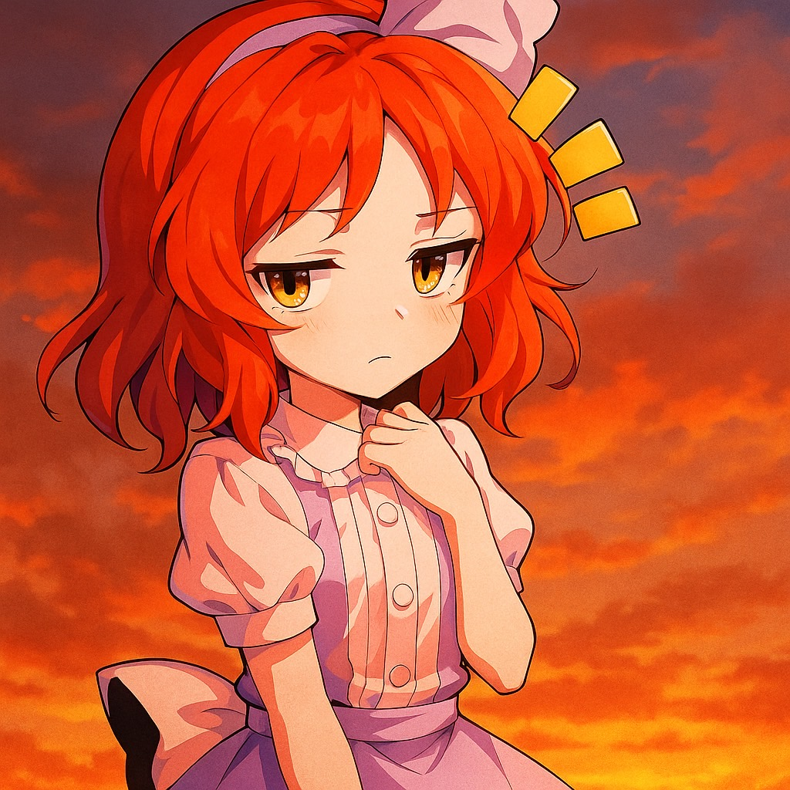

るあん (Luan)
Scriptwriter / Movie Creator
Introduction
ゆっくり茶番劇者として活動中。
東方Projectのキャラクターと世界観をお借りして、画面の向こう側の「体験」をお届けします。
見終わった後、日常の景色が少し変わって見えるような、没入感あふれる脚本を目指しています。
Activity
- 活動開始 2025年9月
- 投稿頻度 週1~3本
- 主なジャンル ヒューマンドラマ / ファンタジー
Q&A
Q. コラボは受け付けていますか？
A. 現在は相互フォローの方、または面識のある方に限らせていただいております。
Q. ファンアートを描いてもいいですか？
A. 大歓迎です！飛んで喜びます！(タグは作成していませんが...)
Q. Webサイト作成や動画編集の依頼は受け付けていますか？
A. もし私でよろしければ、ぜひご相談ください。なお、ご依頼は原則として有償にて承っております。
Q. このサイトの不具合報告は、どこにすればいいですか？
A. X(Twitter) のDMまでご報告ください。
Environment
- 編集ソフト：YMM4 (ゆっくりムービーメーカー4)
- 立ち絵素材：はるか式立ち絵 / わたおきば 他
- 各種素材：ニコニ・コモンズ / ゲームまてりあるず 他
Connect
⚠️ ガイドライン・免責事項
- 当サイト及び公開動画は「東方Project」の二次創作作品です。
- 動画およびサムネイルの無断転載・自作発言は固くお断りいたします。
- 切り抜き動画等、私に関連するコンテンツの作成については、 X(Twitter) のDMまでご相談ください。